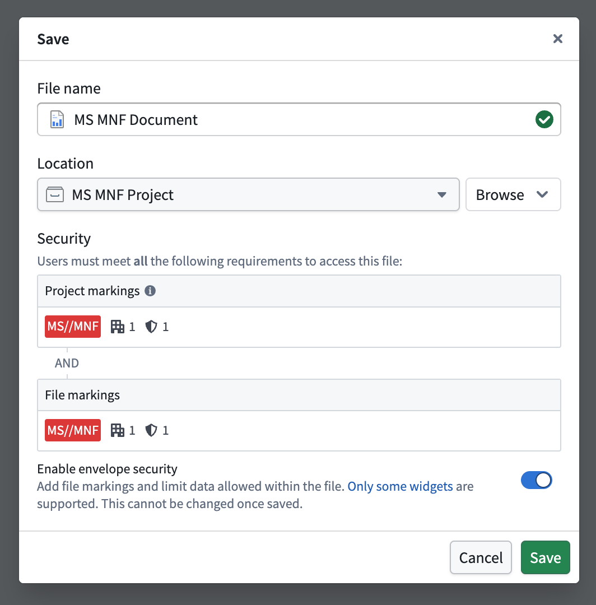
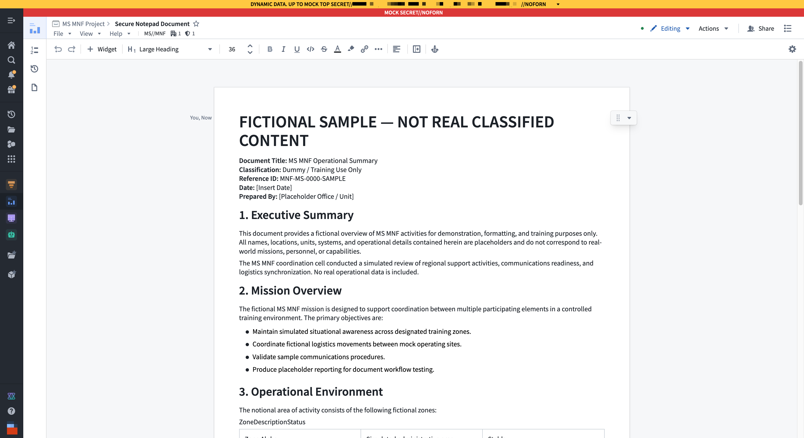
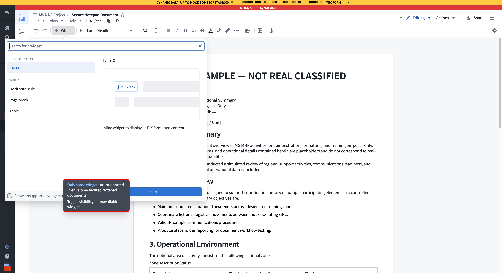

:::callout{theme="neutral" title="Beta"} Envelope security in Notepad is in the beta phase of development and is only available on enrollments that use Classification-based Access Controls (CBAC). The set of supported widgets and document features will expand in future releases. Contact Palantir Support to request access to envelope security if it is not available on your CBAC-enabled enrollment. :::
Envelope security restricts the data Foundry can load inside a Notepad document to a security boundary defined by the document's own CBAC classification and markings. When you enable envelope security on a document, the document's file markings restrict the data that can be added and viewed in the file instead of using each individual user's marking membership to determine what they can view. A Notepad document with envelope security can be safely exported with a banner that accurately reflects the classification of its contents.
Apply envelope security to a document when the security of its content must be enforced and communicated independently of the scoped session a user is working in. Additionally, you can use envelope security in Notepad when you need to:
If you do not need these guarantees, use a regular Notepad document which supports the full set of widgets while filtering dynamically loaded content for each viewer based on their marking membership.
Follow the instructions below to create a document with envelope security from the standard Notepad creation dialog.

You cannot enable or disable envelope security after you create a document. To convert between an envelope-secured and a regular Notepad document, create a new document of the desired type. Additionally, you cannot assign classifications to an envelope-secured document that differ from those of its Project. The classification of an envelope-secured Notepad document must match the classification of its containing Project upon creation.
You can view the outline, version history, referenced data panel, and page settings for an envelope-secured Notepad, just like a regular document.
Envelope-secured documents display a banner derived from the document's file markings.

Envelope-secured documents support the following widgets:
Notepad filters the + Widget menu in envelope-secured documents to display only the supported widgets listed above, including the menu used in headers and footers.
The following Notepad features are not available in envelope-secured documents:
Edit an envelope-secured document following the same workflow you use to edit a regular Notepad document, with the following differences:

When you duplicate an envelope-secured Notepad document, the duplicate retains the same classification and markings as the original document, regardless of the destination Project's classification.
When you move an envelope-secured document into a different Project, the document's classification and markings remain unchanged. The document's classification must fall within the destination Project's allowed classification range, between its project classification and project maximum classification, to ensure it remains accessible.